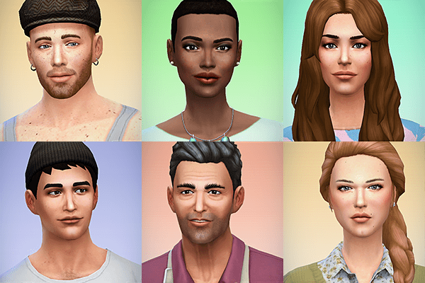
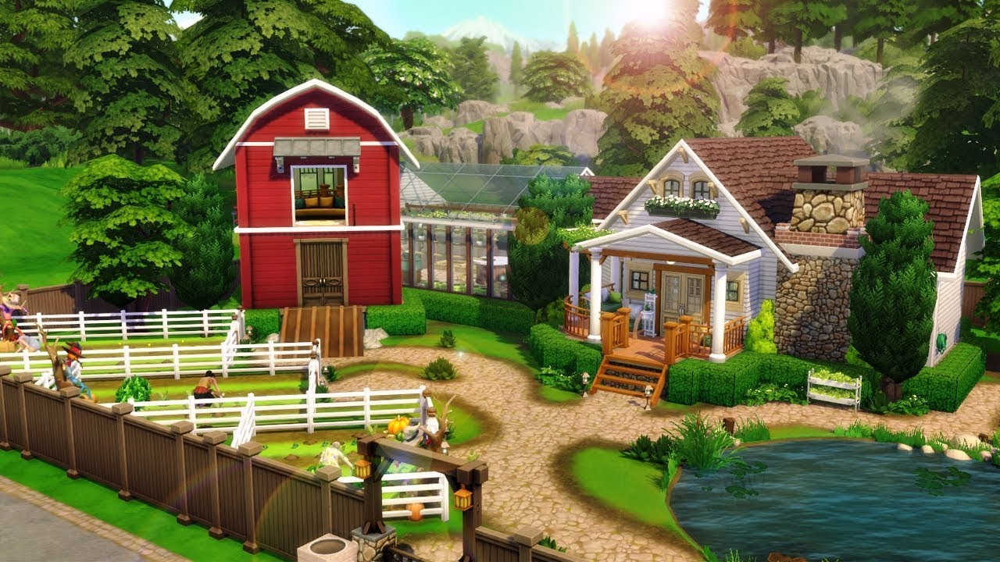

CONHEÇA O JOGO
The Sims 4 é um jogo de simulação social de 2014 desenvolvido pela Maxis e publicado pela EA (Electronic Arts). É também o quarto da série The Sims, sendo sequência do The Sims 3.
Quer ficar por dentro de todas as novidades no mundo Sim? Inscreva-se!
CRIE SIMS ÚNICOS
Você tem uma variedade de Sims para criar, todos com aparências distintas, personalidades dinâmicas e aspirações inspiradoras. Use os recursos para dar vida à sua imaginação.
CONSTRUA A CASA PERFEITA
Projete e construa facilmente as casas perfeitas para os seus Sims usando o Modo Construção. Crie a casa dos seus sonhos escolhendo a mobília e alterando a paisagem e o terreno.
